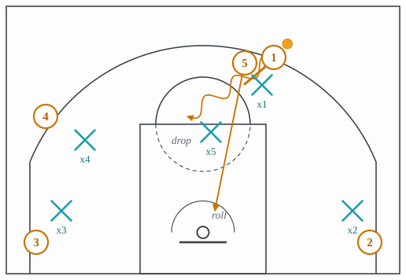
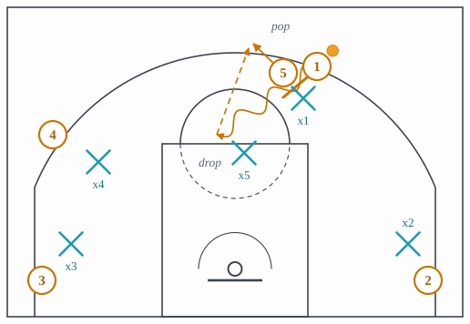
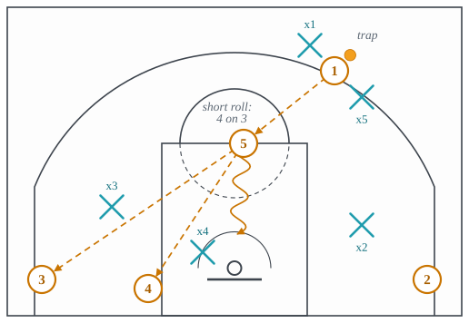
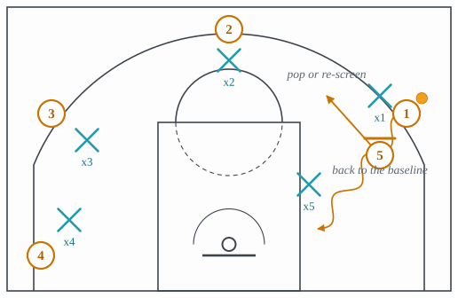
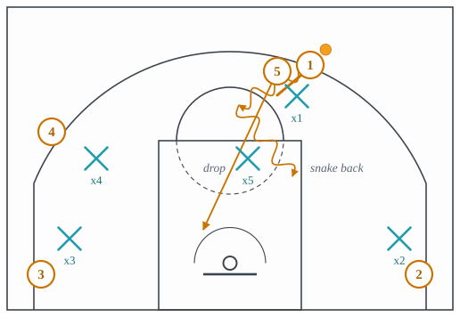

3.3: On-Ball Screens I: The Pick-and-Roll Family
Chapter 3: Offense
Everything in lecture 3.2 got the ball to a moving player past a defender who was not yet set. Against a defense that is set, the offense has to make that seam itself, and the tool it uses most is the screen: one attacker stands still in the path a defender needs to take, so that for one step the defender cannot go where his man is going. Set for the player with the ball, it is a ball screen, and a ball screen followed by the screener running to the rim is the pick-and-roll. It is the most common action in the sport at every level, and the sentence on the front page of this site (“they iced the drag and the low man tagged, so 5 short-rolled”) is a description of one.
The pick-and-roll works because it puts two defenders in a position where two things are true at once. The ball-handler’s defender has been screened and is now behind the ball. The screener’s defender therefore has to help on the ball, and the moment he does, the screener rolling behind him is unguarded. Two defenders, two threats, and one of them is going to be late. Every coverage in lecture 4.3 is a different answer to which one, and every action in this lecture is a way of punishing the answer.
Section 1 defines the screen and the base action. Section 2 is the screener’s three choices after the screen: the roll, the pop, and the short roll. Section 3 is two ways the ball-handler changes the geometry: the step-up screen and the snake dribble. Section 4 is the 4-on-3, which is what the offense has when the defense sends two defenders at the ball. Each action is a card, and each card’s last slot names the coverage built to stop it.
1 The screen and the base action
A screen is legal when the screener is stationary and inside his own cylinder when contact comes; the moment he leans or steps into the defender it is a foul. Because he has to stand still, the whole art of screening is where he stands and at what angle: a screen set a foot too high lets the defender go under it, a foot too low lets him go over. The angle of the screen decides which way the ball-handler can go, and the defense reads that angle before the ball moves.
The base pick-and-roll is shown in Figure 1. The screener arrives, the handler comes off the screen toward the middle, the screener rolls. What the screener’s defender does here decides everything: in the figure he has dropped back toward the free-throw line, which is the drop coverage of lecture 4.3.

- Setup
- The ball-handler above the arc at the slot or the wing with a live dribble. The screener at the elbow or the top. The other three spaced so the lane is empty: two corners and a weak-side wing, or two corners and the dunker spot.
- Trigger
- The screener arrives and sets his feet on the handler’s defender’s shoulder, angled so the handler can go toward the middle.
- Read
- The handler comes off the screen and reads the screener’s defender. Dropped back: pull up at the elbow, or drive at him and pass to the roller if he commits. Stepped up to the ball: hit the roller behind him. Switched onto the handler: attack the big off the dribble, or find the screener sealing the smaller defender. Two defenders on the ball: pass out to the short roll and play 4-on-3.
- Payoff
- The handler with a defender behind him rather than in front, a big rolling to the rim, and a defense that has to choose which one to guard.
- Beaten by
- Any of the coverages of lecture 4.3 played well; the base answer is the drop, which concedes a mid-range pull-up to take away the roll and the drive.
2 The screener’s three choices
After the screen the screener does one of three things, and which one is decided by who he is and what the defense did.
The roll is the base: turn toward the rim as the handler comes off, run to the block, and catch a pass or a lob at the rim. A rolling big who can catch and finish above the rim changes the coverage the defense can play, because a drop that stays at the free-throw line concedes the lob every time.
The pop is the roll’s opposite. A screener who can shoot steps out to the arc instead of rolling, as in Figure 2, and the pass comes back out to him. It is the pick-and-pop. It punishes the drop, because the dropping defender is at the free-throw line guarding a drive that never comes while his man shoots a three above him. The card below is written as a diff of the base action: the slots that change are marked with what was and what is now.

- Setup
- As the pick-and-roll, with a screener who can shoot from the arc.
- Trigger
- The screen, and the screener’s defender dropping toward the rim.
- Read
- The handler reads the dropping defender and passes to the roller behind him. The handler comes off the screen, draws the drop one more step, and passes back out to the screener at the arc.
- Payoff
- A roll to the rim. An open three for a big, or a drop defender who has to leave the paint to contest it, which reopens the drive.
- Beaten by
- A coverage that keeps the screener’s defender attached to him, which is to switch the screen or to play it at the level, both in lecture 4.3.
The short roll is the roll that stops early. When the defense sends two defenders at the ball, a blitz in the vocabulary of lecture 4.3, the screener rolls only as far as the free-throw line, catches the pass out of the trap, and now has the ball facing three defenders with three teammates, as in Figure 3. He is not trying to score from there. He is a passer, and the possession has become the 4-on-3 of Section 4.

- Setup
- As the pick-and-roll, against a defense that traps the ball screen. The two corners filled by shooters; the fourth attacker in the weak-side dunker spot.
- Trigger
- The screener’s defender jumps out to trap the handler with the handler’s own defender.
- Read
- The screener rolls to the free-throw line and shows his hands. The handler gets the ball out of the trap to him. The screener reads the three remaining defenders: the low man on the weak side is the one who has to choose between the dunker spot and the corner, and the pass goes to whichever he leaves.
- Payoff
- A big with the ball at the free-throw line, three defenders to beat, and three teammates open somewhere.
- Beaten by
- The trap arriving so fast that the pass out is a turnover, or a low man good enough to guard two players for a second, which is the X-out rotation of lecture 4.4.
3 Changing the geometry: the step-up and the snake
The step-up screen changes where the screen sends the ball. In the base action the screener stands so the handler goes toward the middle. In a step-up the screener sets the screen with his back to the baseline, below the handler’s defender, so the handler comes off going toward the baseline and the rim, as in Figure 4. Defenses that want to force everything toward the sideline, the ice coverage of lecture 4.3, are built for a screen that comes from above; a step-up comes from below and sends the handler exactly where ice wanted him not to go.

- Setup
- The handler on the wing with the ball. The screener arrives from the block or the dunker spot rather than from the top.
- Trigger
- The screener plants below the handler’s defender, facing the handler, back to the baseline.
- Read
- The handler comes off toward the baseline. If his defender fights over, the handler is going downhill along the baseline against the big alone. If the defender goes under, the handler stops and shoots. If the big steps out to help, the screener pops toward the wing or re-screens the other way.
- Payoff
- A drive toward the baseline against a defense whose rules were written for a drive toward the middle.
- Beaten by
- Switching it, or a big who plays it at the level and turns the handler back toward the middle, where the help is. Both in lecture 4.3.
The snake dribble changes where the handler goes after the screen. He comes off toward the middle as usual, but instead of continuing he cuts back across in front of the defender who is chasing him, so that defender ends up on his back, as in Figure 5. The dropping big now has to guard the handler alone, and the roller is coming down the other side of the lane. It is a two-on-one with the trailing defender taken out of it.

- Setup
- The base pick-and-roll against a drop, with the handler’s defender fighting over the screen and chasing.
- Trigger
- The handler feels the chaser on his hip and the dropping big level with the free-throw line.
- Read
- The handler snakes back across the chaser’s path. The chaser is now behind him and cannot recover without fouling. The handler reads the big: if the big stays back, pull up; if he steps up, the roller is behind him; if he stays with the roller, drive.
- Payoff
- The handler alone against the big with the chaser removed, and the roller open on the far side.
- Beaten by
- The chaser going under the screen rather than over, so there is no one to snake in front of; or the big playing at the level so the handler has no room to change direction. Lecture 4.3.
4 The 4-on-3
When the defense sends two defenders at the ball, it has chosen to guard the other four attackers with three. That is the 4-on-3, and it is the geometry every trapping coverage has to live with. Figure 6 shows it: the ball is trapped at the slot, the short-rolling big is at the free-throw line, a shooter is in each corner, and the fourth attacker is in the dunker spot. The three remaining defenders form a triangle and cannot cover all four.

- Setup
- A ball screen that the defense has trapped. The short-roller at the free-throw line; shooters in both corners; the fourth attacker in the weak-side dunker spot.
- Trigger
- The pass out of the trap.
- Read
- The receiver reads the three defenders. The weak-side low man is the key: he cannot guard the dunker spot and the weak corner at once. If he sinks to the dunker, the corner is open; if he stays with the corner, the dunker is open for a lob or a drop-off; if the nail defender comes to the ball, the strong corner is open.
- Payoff
- A layup or a corner three, chosen by which defender the defense left short.
- Beaten by
- Rotations fast enough to cover four spots with three men for the two seconds it takes the trap to recover, which is the whole of lecture 4.4, and a trap that gets the ball out of the handler’s hands late enough that the shot clock does the rest.
The idea to carry into lecture 3.4 is that every action here is the pick-and-roll with one variable changed: who the screener is, which way the screen faces, what the screener does after, where the handler goes. The named actions in the next lecture change more than one at a time, and most of them exist because the coverages in Chapter 4 got good at guarding the version with one.